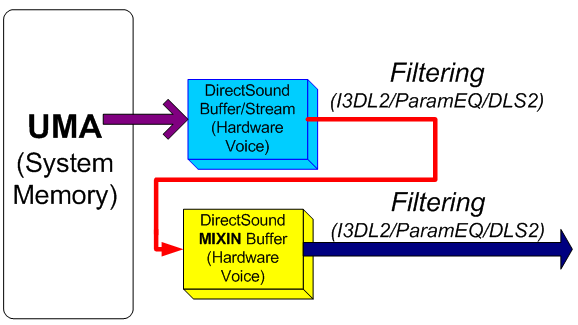
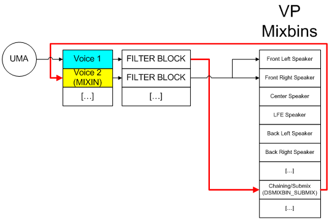
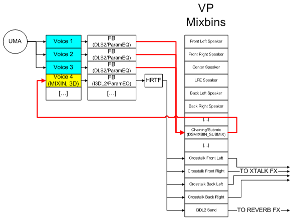
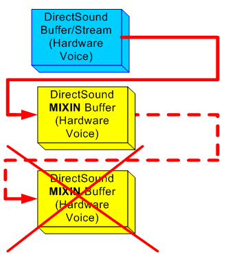
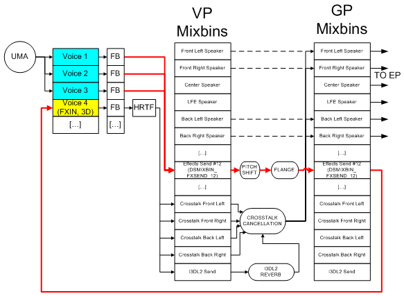
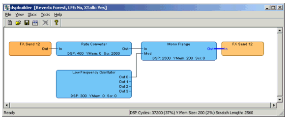
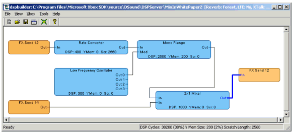
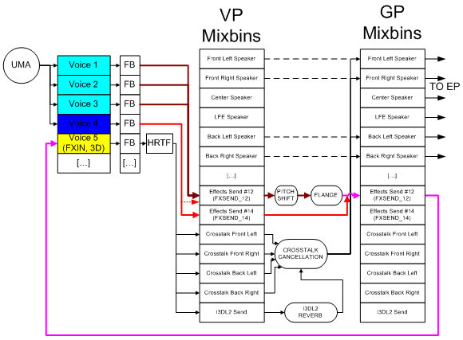

By Scott Selfon (Audio Content Consultant, Xbox Advanced Technology Group)
The Xbox® Media Communications Processor (MCP) exposes a potentially daunting pipeline for voice manipulation and processing. The simplest use involves playing a voice and sending its output to one of the default speaker configurations (stereo, HRTF, and so on). More involved implementations can take advantage of per voice features: LFOs, a programmable DLS-2/Parametric EQ filter block, pitch and amplitude envelopes, an I3DL2 occlusion/obstruction filter for HRTF voices, and so on.1 But some of the most interesting potential for audio content manipulation with the Xbox MCP involves using the capabilities of mixbins and the global processor, which is a fully programmable DSP.2 After discussing mixbins and the global processor, this paper will discuss several audio content manipulation features—including chaining, submixing, and multipass effects—provided by the Xbox MCP. This paper also includes implementation scenarios and notes.
Simple voice playback involves a hardware voice pointing at a segment of the Unified Memory Architecture (UMA) and reading data from it. A key feature of the Voice Processor is the ability for a voice to read its data from alternate locations—namely, from mixbins. As we'll see in a moment, chaining and submixing both make direct use of voice processor mixbin data (data fed from one or more source voices). By comparison, multipass effects apply real-time effects to one or more mixbins in the Global Processor, and the voice then uses the result of these real-time effects as its input.
Before proceeding, let's start with a quick review of mixbins. Remember that there are 32 mixbins. Each hardware voice can route to up to eight of them, each with independent volume control.3 Stereo and mono voices typically have no "required" mixbins; you can send them to any eight mixbins that you wish. Meanwhile, 3D voices are required to send to certain mixbins (which are aptly defined in the DirectSound constant DSMIXBINVOLUMEPAIRS_REQUIRED_3D). You can also assign any additional mixbins that you wish, up to the aforementioned limit of eight.
Chaining and submixing are the most straightforward processes for using a mixbin as the input to a voice. These two terms describe fairly closely related behaviors. To distinguish, chaining typically describes a process in which a single source voice is routed through another voice (normally to accomplish more complex filtering). By contrast, submixing typically describes a process in which many source voices are routed into a single destination voice. The most common use for submixing is mixing multiple 2D voices into a single 3D voice for positioning. Both chaining and submixing can be used simultaneously for different voices on the Xbox MCP.

Illustration A simplified diagram showing the chaining process. A standard hardware voice reads data from memory, and then applies filtering. Once filtered, another voice uses the processed audio as its input. The processed audio can then be re-filtered before being sent to one or more mixbins.

Illustration A diagram showing how chaining actually works. Voice 1 reads its data from memory. The filtered sound is sent to the special chaining/submix mixbin, and Voice 2 then reads the data from that mixbin. Voice 2 can then apply its own set of envelopes, filters, and so on, before outputting the processed sound to as many as eight mixbins (in this case, the two front speakers).
Over a wide range of games, submixing may be more applicable than chaining. Submixing feeds multiple voices into a single MIXIN voice, which can then be sent for effects processing, 3D positioning, and so on. The classic example of submixing is evident in most driving games, when other vehicles that you race against make often independent noises—engine sounds, horns, skidding wheels, collisions, and so on. We could position each of these sounds independently in 3D space, but this method incurs some CPU overhead4 and potentially uses a significant fraction of our limited 3D voices. Because we know that these sounds all emanate from roughly the same position, we can submix all of these sounds (played on regular 2D voices) into a single 3D-capable voice. Then we can position that single voice based on where the car is relative to the listener(s).

Illustration Diagram showing a typical use of submixing. Three voices are routed to the chaining/submix mixbin, where the MIXIN voice picks up their mixed audio. After applying filtering (3D voices support I3DL2 occlusion/obstruction filtering, as well as Parametric EQ or DLS-2), the voice is 3D-positioned and then sent to the default 3D mixbins.5
As you can see from the above diagrams, MIXIN voices do not actually read data directly from the source voices. Instead MIXIN voices read data from a special DSMIXBIN_SUBMIX mixbin. You might wonder how multiple voices can be reading different submixes from this single mixbin without simultaneously receiving data from other submixes. This is possible because hardware voice allocation occurs in an order such that MIXIN voices only read data when their source voices are being mixed into the submix mixbin. In this case, the input voice(s) mix into the submix mixbin, the output voice reads that data, and the next set of input voices (for another submix) subsequently overwrite that mixbin. This process then repeats itself, all within a single audio frame. The net effect is that multiple chains and submixes (using different source voices) can be used simultaneously.
The primary limitation of chaining and submixing is that a MIXIN voice must use non-MIXIN voices as its source. You cannot, for instance, chain a single voice 255 times.

Illustration This diagram shows an illegal configuration. A voice cannot be chained or submixed multiple times.
From the developer's point of view, implementing submixing/chaining6 is a two step process:
For more details, see the appropriate documentation in the Xbox Development Kit help file.
Let's say our game calls for some dinosaur sounds. We want to create these sounds in realtime by pitch shifting and flanging some slightly less exotic sounds (like elk grunts). No problem. We create a DSP effects image (that includes both our pitch shifter and flange effect processing one of the VP mixbins), send the effects output to our speaker mixbins, and then route our sound to the VP mixbin for playback. But now we want to 3D-position that dinosaur relative to the player. This provides a good example of a problem that can be solved with multipass effects.
As with the chaining/submixing processes, multipass effects involve a voice reading from a mixbin. But rather than locking onto the DSMIXBIN_SUBMIX mixbin (which does not allow for effects to be applied), we can point an FXIN voice at any Global Processor mixbin:

Illustration Diagram showing an example of multipass effects. The three source voices are sent to Effects Send #12, where the DSP image applies pitch shift and flanges to the source voices. The output of this effect is placed in the corresponding Global Processor Mixbin, where it is read by the FXIN voice. As before, this voice is then 3D-positioned. The typical crosstalk cancellation and reverb effect configuration are displayed to indicate the full DSP image currently in use.
The latency period differs between submixing and chaining. As previously mentioned, MIXIN buffers actually pick up data from the submix mixbin within the same audio frame, so no extra latency is incurred. However, FXIN buffers are reading from other mixbins and retrieve this data in the next audio frame. Because this audio data will now be making two full trips through the audio chip, multipass effects incurs .667 msec latency compared to "regular" and submixed/chained voices.
Note that, although we are reading from the output of an effects chain, FXIN voice still needs to know from which voices its source data originates. The reason is that if we want to pitch shift the FXIN buffer (Doppler shifting on a 3D-positioned sound, for example), it is the source voices that will need to be pitch shifted; the FXIN voice isn't capable of slowing down the input mixed into it, nor can the FXIN voice read into the future. For this reason, you must still call SetOutputBuffer on the source voices that are feeding into the effect. This can bring up some interesting issues in more complex configurations, which we'll get to in a moment.
Note Remember that GP mixbins and VP mixbins are actually the same memory area. As a result, if an effects program doesn't specify otherwise, data sent to the VP mixbin passes through to the corresponding GP mixbin. If an effect writes data to that mixbin, the data will typically mix with whatever audio data is already in that mixbin. In the above case, we probably don't want to hear the original elk (unprocessed sound), so when authoring the DSP effects program, we should make sure to tell the effect to overwrite when sending data to the mixbin.
Note The overwrite command can be selected in the DSP Builder from the effect's right click menu.

Illustration This diagram shows one possible DSP effects program that corresponds to the dinosaur sound example above. Note that because the flange effect output is set to overwrite (indicated by thick blue line), we don't end up with a mix of "dry" audio and effects-processed audio7. The presence of the reverb and crosstalk cancellation effects observed in the previous illustration are indicated in the title bar, and are set via Build Options. These effects will be generated for the image without the user having to manually draw all of their connections.
Things get a bit more interesting when our VP mixbin doesn't correspond to the GP mixbin that we want the FXIN buffer to read from. Suppose, for example, that we want to include the sound of dinosaur footsteps in our game, but we don't want to modify these sounds with pitch shifting/flanging. On the other hand, we do want the sound of the dinosaur footsteps to be mixed with the modified elk growls, and to be 3D-positioned using a single voice. As the following graphic shows, achieving these objectives is fairly straightforward from the effects program side:

Illustration This diagram shows an effects program for mixing dry (FX Send 14) and processed (FX Send 12) audio into FX Send 12 for multipass effects.
However, achieving these objectives becomes somewhat more complicated from the mixbin assignment side. Assuming we still want the sounds of our dinosaur footsteps to respond to pitch control (for Doppler, for example), we need to call SetOutputBuffer on those input buffers to point them at the FXIN buffer. But this action immediately makes these voices direct their output solely to the mixbin from which the FXIN buffer is reading (in the above example, the FXIN buffer is reading FX Send 12; in the more general case, the FXIN buffer is reading the mixbin specified in DSBUFFERDESC.dwInputMixBin). Therefore, we want to manually SetMixBins on this input voice. This action will do the following: 1) direct this voice to FX Send 14, and 2) ensure that its volume is muted for FX Send 12.

Illustration This diagram shows that Voice 4 is mixing with the other voices without being processed. Because we have SetOutputBuffer on Voice 4 pointing at our FXIN buffer, the input voice will always send data to Effects Send #12. As a result, it is important to call SetMixBinVolume on Voice 4 to mute the Effects Send #12 mixbin. (This call is indicated by the red dotted line).
Most of the coding concepts and implementation8 issues relating to multipass effects were covered in the above section, but to review:
Note This call is only required if you need pitch control over these voices (typically for 3D-positioning or variable pitch on playback9).
See the 3D-Positioning of Multichannel Audio white paper (A Brief Digression: Multipass and Volume section) for volume considerations when using submixes and multipass effects.
To avoid using multipass effects altogether, why not just author the dinosaur sound at its target pitch? Or why not use chaining and submixing to author the sounds with filtering built-in?
There are several reasons why these two options are not as effective as the techniques discussed in this paper:
In short, multipass effects give the sound designer more time to create killer source material. Rather than spending the vast majority of authoring (and development) time generating 20 versions of a gunshot—whether the variations include the sound of the gunshot through a wall, around a corner, behind you, or right in front of you—the effects creator can use Xbox hardware filtering (for this particular example, probably occlusion/obstruction filtering) to do the work for them. Furthermore, the effects creator can use the Xbox filtering in real time, and in the game itself. The benefit is that, instead of bogging down in situations overly specific to the game state, the sound designer will have more time to create and tweak source material. And who doesn't want more sound options in less memory footprint with less authoring time?
For more information about topics presented in this paper, please consult the Xbox Audio Best Practices Guide, the Xbox Development Kit documentation, and the white papers in the Audio Designer's Corner. In addition, you can send an e-mail message to content@xbox.com.
1 For more details on filtering use, see Chapter 3 of the Audio Best Practices Guide and the "SetFilter" code sample in the Xbox Development Kit.
2 For more information on creating DSP effects images, see the white paper Authoring and Auditioning Effects Programs.
3 Mixbin assignments and initial volume settings are made using IDirectSoundBuffer/Stream8::SetMixBins. Subsequent per mixbin volume changes can be made via IDirectSoundBuffer/Stream8::SetMixBinVolume.
4 For more information about 3D positioning and CPU usage optimizations, see the white paper entitled DirectSound Performance.
5 For more details on the path followed by 3D voices, as well as how reverb and crosstalk cancellation can be configured for mixbins, see the white paper entitled Authoring and Auditioning Effects Programs.
6 For a full coded implementation of submixing, see the (unfortunately named) MultiPass sample in the Xbox Development Kit.
7 For more details on DSP Builder, authoring DSP effects images, and overwrite versus merge, see the white paper titled Authoring and Auditioning Effects Programs.
8 See the FXMultiPass sample in the Xbox Development Kit for a full coded implementation.
9 Note that in current XDK libraries, at least one voice must set its output buffer to include an FXIN buffer (before the FXIN buffer will be audibly played).